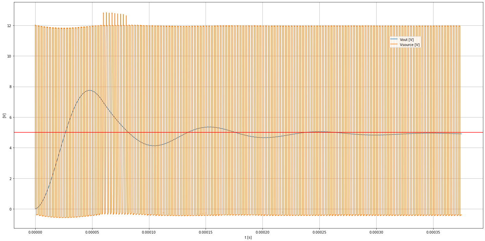
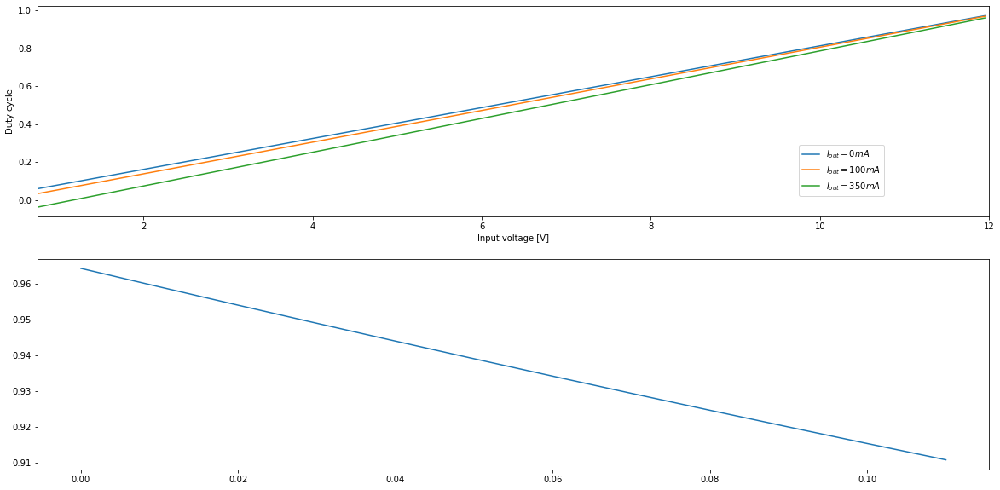

Buck Converter
Inhoud
Buck Converter¶
Zonder belasting van de uitgang¶
import matplotlib.pyplot as plt
import PySpice.Logging.Logging as Logging
from PySpice.Doc.ExampleTools import find_libraries
from PySpice.Probe.Plot import plot
from PySpice.Spice.Library import SpiceLibrary
from PySpice.Spice.Netlist import Circuit
from PySpice.Unit import *
def step_down(Vin = 12@u_V,Vout = 5@u_V,Iload = 2@u_A,frequency = 400@u_kHz,ripple_voltage = 50@u_mV,RL = 37@u_mΩ,ESR = 30@u_mΩ,ESL = 0,ripple_voltage_in = 200@u_mV,ESR_in = 120@u_mΩ,printdesignparameters=True):
logger = Logging.setup_logging()
#libraries_path = find_libraries()
libraries_path = r'C:\Users\jangenoe\code\PySpice\examples\libraries'
spice_library = SpiceLibrary(libraries_path)
circuit = Circuit('Buck Converter')
circuit.include(spice_library['1N5822']) # Schottky diode
circuit.include(spice_library['irf150'])
ratio = Vout / Vin
Rload = Vout / (.8 * Iload)
period = frequency.period
duty_cycle = ratio * period
ripple_current = .3 * Iload # typically 30 %
L = (Vin - Vout) * duty_cycle / ripple_current
Cout = (ripple_current * duty_cycle) / (ripple_voltage - ripple_current * ESR)
ripple_current_in = Iload / 2
Cin = duty_cycle / (ripple_voltage_in / ripple_current_in - ESR_in)
L = L.canonise()
Cout = Cout.canonise()
Cin = Cin.canonise()
if printdesignparameters:
print('ratio =', ratio)
print('RLoad =', Rload)
print('period =', period.canonise())
print('duty_cycle =', duty_cycle.canonise())
print('ripple_current =', ripple_current)
print('L =', L)
print('Cout =', Cout)
print('Cint =', Cin)
else:
circuit.V('in', 'in', circuit.gnd, Vin)
circuit.C('in', 'in', circuit.gnd, Cin)
# Fixme: out drop from 12V to 4V
# circuit.VCS('switch', 'gate', circuit.gnd, 'in', 'source', model='Switch', initial_state='off')
# circuit.PulseVoltageSource('pulse', 'gate', circuit.gnd, 0@u_V, Vin, duty_cycle, period)
# circuit.model('Switch', 'SW', ron=1@u_mΩ, roff=10@u_MΩ)
# Fixme: Vgate => Vout ???
circuit.X('Q', 'irf150', 'in', 'gate', 'source')
# circuit.PulseVoltageSource('pulse', 'gate', 'source', 0@u_V, Vin, duty_cycle, period)
circuit.R('gate', 'gate', 'clock', 1@u_Ω)
circuit.PulseVoltageSource('pulse', 'clock', circuit.gnd, 0@u_V, 2.*Vin, duty_cycle, period)
circuit.X('D', '1N5822', circuit.gnd, 'source')
circuit.L(1, 'source', 1, L)
circuit.R('L', 1, 'out', RL)
circuit.C(1, 'out', circuit.gnd, Cout) # , initial_condition=0@u_V
circuit.R('load', 'out', circuit.gnd, Rload)
simulator = circuit.simulator(temperature=25, nominal_temperature=25)
analysis = simulator.transient(step_time=period/300, end_time=period*150)
figure, ax = plt.subplots(figsize=(20, 10))
ax.plot(analysis.time,analysis.out, label='Vout [V]')
ax.plot(analysis.time,analysis['source'],label='Vsource [V]')
# ax.plot(analysis['source'] - analysis['out'])
# ax.plot(analysis['gate'])
ax.axhline(y=float(Vout), color='red')
ax.legend( loc=(.8,.8))
ax.grid()
ax.set_xlabel('t [s]')
ax.set_ylabel('[V]')
plt.tight_layout()
step_down()
ratio = 0.4166666666666667 sr
RLoad = 3.125 Ω
period = 2.5000000000000004 μs
duty_cycle = 1.0416666666666667 μs
ripple_current = 0.6 A
L = 12.152777777777779 μH
Cout = 19.53125 μF
Cint = 13.020833333333332 μF
step_down(printdesignparameters=False)


Fig. 43 Schakelspanning en bekomen spanning voor een step-down converter met een inputspanning van 12 V die opstart van 0V naar 5V, zonder stroom aan de uitgang. De gewenste spanning is aangegeven in het rood.¶
Onder belasting van de uitgang: 5uA¶
step_down(Iload = 5@u_A)
ratio = 0.4166666666666667 sr
RLoad = 1.25 Ω
period = 2.5000000000000004 μs
duty_cycle = 1.0416666666666667 μs
ripple_current = 1.5 A
L = 4.861111111111112 μH
Cout = 312.5 μF
Cint = -26.04166666666667 μF
step_down(Iload = 5@u_A,printdesignparameters=False)

Fig. 44 Schakelspanning en bekomen spanning voor een step-down converter met een inputspanning van 12 V die opstart van 0V naar 5V, onder een uitgangsstroom van 5 uA. De gewenste spanning is aangegeven in het rood.¶